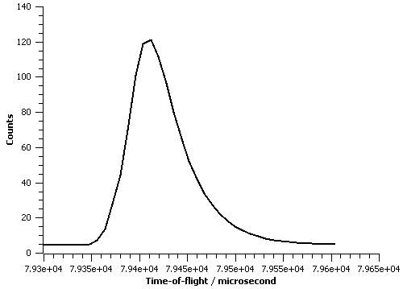

IkedaCarpenterPV#
Description#
This peakshape function is designed to be used to fit time-of-flight peaks. In particular this function is the convolution of the Ikeda-Carpenter function (Ref [1]), which aims to model the neutron pulse shape from a moderator, and a pseudo-Voigt that models any broadening to the peak due to sample properties etc.
The convolution of the Ikeda-Carpenter function with psuedo-Voigt is (Ref [3])
where \(\Omega_G\) and \(\Omega_L\) are the Gaussian and Lorentzian parts of the function, respectively:
\(erfc\) is the complementary error function, \(E_1\) is the complex exponential integral, and \(Im\) is the imaginary component.
The parameters used above are defined as (from Panel 13 of Ref [3]):
\[k = 0.05\]
\[\alpha^- = \alpha(1 - k)\]
\[\alpha^+ = \alpha(1 + k)\]
\[x = \alpha^- - \beta\]
\[y = \alpha - \beta\]
\[z = \alpha^+ - \beta\]
|
\[z_s = -\alpha dt + i\frac{1}{2} \alpha \gamma\]
\[z_u = -\alpha^- dt + i\frac{1}{2} \alpha^- \gamma = (1-k)z_s\]
\[z_v = -\alpha^+ dt + i\frac{1}{2} \alpha^+ \gamma = (1+k)z_s\]
\[z_r = -\beta dt + i\frac{1}{2} \beta \gamma\]
|
\[u = \frac{1}{2} \alpha^- (\alpha^- \sigma^2 - 2dt)\]
\[v = \frac{1}{2} \alpha^+ (\alpha^+ \sigma^2 - 2dt)\]
\[s = \frac{1}{2} \alpha (\alpha \sigma^2 - 2dt)\]
\[r = \frac{1}{2} \beta (\beta \sigma^2 - 2dt)\]
|
\[N = \frac{1}{4} \alpha \frac{(1-k^2)}{k^2}\]
\[N_u = 1 - R \frac{\alpha^-}{x}\]
\[N_v = 1 - R \frac{\alpha^+}{z}\]
\[N_s = -2(1 - R\frac{\alpha}{y})\]
\[N_r = 2R\alpha^2\beta \frac{k^2}{xyz}\]
|
\[y_u = \frac{ (\alpha^- \sigma^2 - dt) }{\sqrt{2\sigma^2}}\]
\[y_v = \frac{ (\alpha^+ \sigma^2 - dt) }{\sqrt{2\sigma^2}}\]
\[y_s = \frac{ (\alpha \sigma^2 - dt) }{\sqrt{2\sigma^2}}\]
\[y_r = \frac{ (\beta \sigma^2 - dt) }{\sqrt{2\sigma^2}}\]
|
where \(dt = T_i - T_h\) is the shift in microseconds with respect to the Bragg position, \(\alpha\) and \(\beta\) are the fast and slow neutron decay constants respectively, and \(R\) is a maxing coefficient that relates to the moderator temperature. \(\alpha\) and \(R\) are further modelled to depend on wavelength and using the notation in the Fullprof manual (Ref [2]). The refineable Ikeda-Carpenter parameters are Alpha0, Alpha1, Beta0 and Kappa and these are defined as
, where \(\lambda\) is the neutron wavelength. In general when fitting a single peak it is not recommended to refine both Alpha0 and Alpha1 at the same time since these two parameters will effectively be 100% correlated because the wavelength over a single peak is likely effectively constant. All parameters are constrained to be non-negative.
The pseudo-Voigt function is defined as a linear combination of a Lorentzian and Gaussian and is a computational efficient way of calculation a Voigt function. The Voigt parameters are related to the pseudo-Voigt parameters through a relation (see Fullprof manual eq. (3.16) which in revision July2001 is missing a power 1/5). It is the two Voigt parameters which you can refine with this peakshape function: SigmaSquared (for the Gaussian part) and Gamma (for the Lorentzian part). Notice the Voigt Gaussian FWHM=SigmaSquared*8*ln(2) and the Voigt Lorentzian FWHM=Gamma.
For information about how to create instrument specific values for the parameters of this fitting function see CreateIkedaCarpenterParameters.
The implementation of the IkedaCarpenterPV peakshape function here follows the analytical expression for this function as presented in Panels 13-17 of Ref[3].
References:
S. Ikeda and J. M. Carpenter, Nuclear Inst. and Meth. in Phys. Res. A239, 536 (1985)
Fullprof manual, see http://www.ill.eu/sites/fullprof/
J. Rodriguez-Carvajal, Using FullProf to analyze Time of Flight Neutron Powder Diffraction data
The figure below illustrate this peakshape function fitted to a TOF peak:

Properties (fitting parameters)#
Name |
Default |
Description |
|---|---|---|
I |
0.0 |
The integrated intensity of the peak. I.e. approximately equal to HWHM times height of peak |
Alpha0 |
1.6 |
Used to model fast decay constant |
Alpha1 |
1.5 |
Used to model fast decay constant |
Beta0 |
31.9 |
Inverse of slow decay constant |
Kappa |
46.0 |
Controls contribution of slow decay term |
SigmaSquared |
1.0 |
standard deviation squared (Voigt Guassian broadening) |
Gamma |
1.0 |
Voigt Lorentzian broadening |
X0 |
0.0 |
Peak position |
Categories: FitFunctions | Peak
Source#
C++ header: IkedaCarpenterPV.h
C++ source: IkedaCarpenterPV.cpp